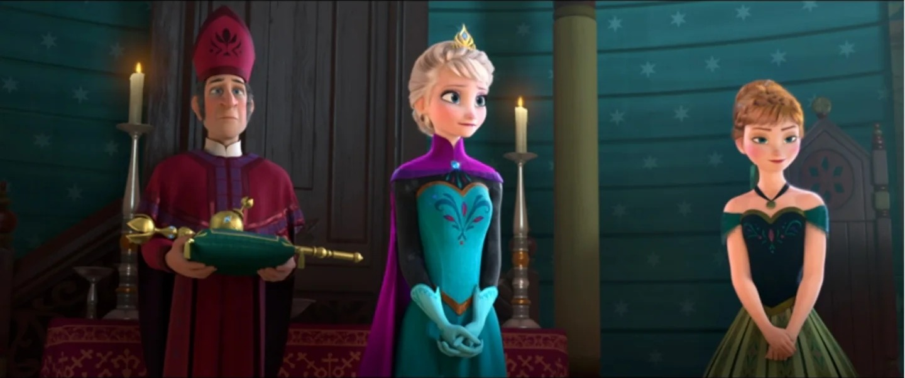

爱


📖 这一页讲什么
「爱」是安娜故事的核心——她从「渴望被爱」到「选择去爱」，从「浪漫之爱」到「姐妹之爱」，最终理解了「爱就是把别人的需求放在自己之前」。这一页拆解安娜的「爱」的弧光。
💔 渴望被爱：孤独中的「寻找」
安娜的「爱」始于「渴望被爱」。童年被姐姐疏远、被父母忽视——她的核心需求是「被爱、被陪伴、被看见」。加冕日，她遇到汉斯，迅速坠入爱河——这不是「天真」，而是「终于有人关注我」的感动。她太渴望被爱了，所以轻易地相信了汉斯的甜言蜜语。她的「寻找真爱之吻」也是出于同样的需求——她相信「真爱之吻」能拯救她，因为她相信「被爱」能解决一切问题。这种「渴望被爱」的状态，是安娜「爱」的弧光的起点——她还没有理解「爱」的真正含义。
⚔️ 汉斯的背叛：「被爱」的幻灭
汉斯的背叛是安娜「爱」的弧光的转折点。她曾经相信「一见钟情就是真爱」，相信「真爱之吻能拯救一切」，相信「被爱就是幸福」。但汉斯的背叛让她明白：「被爱」不一定是真爱——甜言蜜语可能是欺骗，浪漫之吻可能是算计。她的「被爱」的幻想被打碎了，但这也让她开始理解「爱」的真正含义——爱不是「被爱」，而是「去爱」；爱不是甜言蜜语，而是行动与牺牲。
💖 真爱之举：从「被爱」到「去爱」
F1高潮，安娜面临最后的抉择——她本可被克里斯托夫救走（「真爱之吻」），却看见汉斯正欲对艾莎下毒手。于是她用尽最后力气扑上前为姐姐挡下致命一击，自己则彻底冰封。这一「为姐姐牺牲」的举动，是安娜「爱」的弧光的完成——她从「渴望被爱」变成了「选择去爱」。她不再寻找「真爱之吻」（被爱），而是选择「为姐姐牺牲」（去爱）。这个「真爱之举」颠覆了童话传统：不是王子的吻拯救了公主，而是妹妹的牺牲拯救了姐姐。它告诉我们：真爱不是「被爱」，而是「去爱」；真爱不是甜言蜜语，而是行动与牺牲。Olaf在终幕点题：「Love is putting someone else's needs before yours」（爱就是把别人的需求放在自己之前）——这正是安娜用行动证明的「爱」的定义。
"Love is putting someone else's needs before yours."
—— 雪宝 · 《冰雪奇缘》（安娜一生行事的写照）
👭 姐妹之爱：全系列的核心
安娜的「爱」的核心是「姐妹之爱」——她对艾莎的爱，是全系列最核心的情感线。从童年的「Do you want to build a snowman?」到F1的「为姐姐挡剑」，从F2的「追姐姐到魔法森林」到「接受姐姐独自渡海」，安娜对艾莎的爱经历了完整的弧光：从「渴望连接」到「牺牲拯救」，从「抓住不放」到「学会放手」，从「我保护你」到「我们各自强大」。这种「姐妹之爱」不是浪漫之爱，不是亲情之爱，而是「超越一切的羁绊之爱」——它不需要血缘（虽然她们有血缘），不需要仪式，不需要言语，只需要「我知道你是谁，我选择爱你」。
🌱 成熟的爱：各自强大、始终相连
F2结局，安娜的「爱」达到了最成熟的形态——「各自强大、始终相连」。艾莎成为第五元素精灵、留守魔法森林；安娜接任阿伦黛尔女王。她们不再「谁保护谁」，而是「各自统治自己熟悉的世界，却始终相连」。这种「爱」不是「占有」，而是「成全」——安娜支持艾莎成为第五灵、守护森林，因为她知道这是艾莎的「归属」；艾莎信任安娜治理阿伦黛尔，因为她知道安娜有「做下一件对的事」的勇气和坚持。这种「各自强大、始终相连」的爱，是全系列最成熟的爱的形态——爱让人分离而不失联，恐惧才让人靠近却彼此冰封。
💫 爱的主题意义
安娜的「爱」的弧光，是《冰雪奇缘》对「爱」的最深刻诠释。传统童话中，「爱」是浪漫之爱——王子与公主一见钟情，真爱之吻拯救一切。但《冰雪奇缘》颠覆了这个传统：「真爱之举」是姐妹牺牲之爱，不是浪漫之吻；汉斯的「true love's kiss」被证伪，证明没有真爱支撑的仪式只是空壳。安娜的「爱」的弧光告诉我们：爱不是「被爱」，而是「去爱」；爱不是甜言蜜语，而是行动与牺牲；爱不是占有，而是成全；爱不是「抓住不放」，而是「各自强大、始终相连」。这种「爱」的定义，比传统童话的「浪漫之爱」更加深刻，也更加真实——因为它不需要魔法，不需要天赋，只需要「选择」——选择去爱，选择牺牲，选择成全。